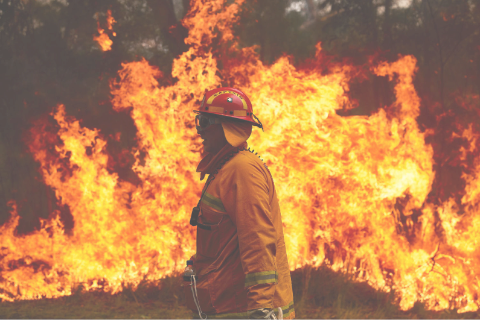
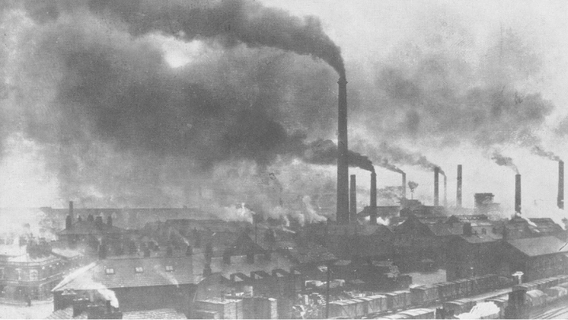
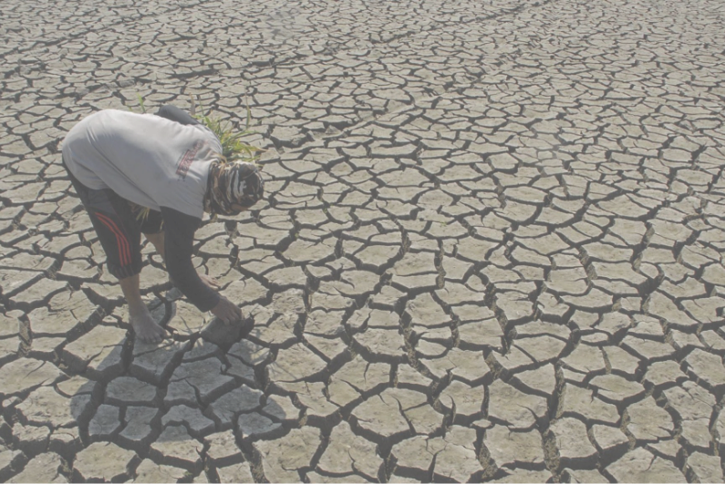
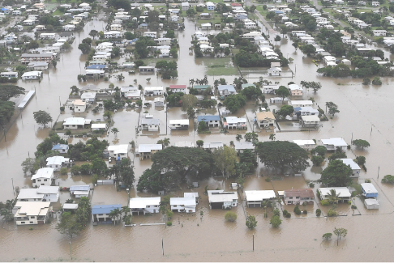
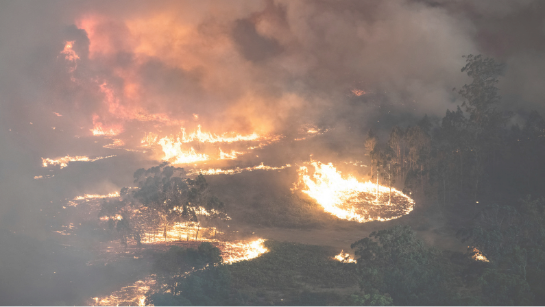
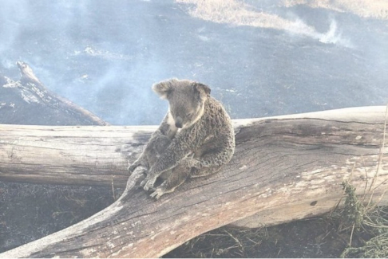

Het klimaat verandert
Dit is een onderwerp dat de laatste jaren steeds vaker in zowel de politiek als de media naar voren komt. Mensen zijn bezorgd en deze bezorgdheid is niet geheel onterecht.
Het begin van

Sinds 1850, het begin van de industriële revolutie, is de concentratie van CO2 met meer dan 40% toegenomen. De gemiddelde temperatuur is sindsdien met circa 1 graad Celsius gestegen en zal de komende decennia met nog 2 tot 3 graden stijgen. In 2100 kan de temperatuur met 10 graden gestegen zijn.
De gevolgen
 De klimaatverandering heeft gevolgen voor alle regio’s in de wereld. De ijskappen smelten en de zeespiegel stijgt. In sommige regio’s komen extreme weersomstandigheden en overstromingen steeds vaker voor, terwijl andere vaker met extreme hitte en droogte te kampen hebben. Deze extreme weersomstandigheden kunnen problemen met zich meer brengen.
Australië 2019
 De zomer van 2019/2020 was een pittige tijd voor Australië, met heftige bosbranden die grote delen van het land teisterden. Grote stukken natuur werden verwoest en miljoenen dieren verloren het leven. Daarbij zijn 33 mensen omgekomen en 3,094 woningen onbewoonbaar verklaard.
Data
In deze data visualisatie is te zien Waar de bosbranden zijn begonnen en hoe het zo uit de hand heeft kunnen lopen.